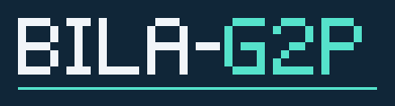

CQN
—

Hai chuẩn chữ viết. Một lõi ngữ âm. Nhiều backend âm thanh.
—
—
Nghe CQN dùng giọng hệ điều hành/trình duyệt, không phải tổng hợp từ âm vị.
Chưa kết nối backend.
Văn bản chỉ gửi đến endpoint bạn chọn khi bấm phân tích. Backend phải cho phép CORS nếu khác origin. WASM G2P offline chưa phát hành.
npm install @vietflexmap/bila-g2p
import { fromCqn } from "https://cdn.jsdelivr.net/npm/@vietflexmap/bila-g2p@1.0.0/docs/sdk/index.js";import { fromCqn, selfTest } from "@vietflexmap/bila-g2p";
console.log(fromCqn("Tôi yêu tiếng Việt"));
console.log(selfTest());Chưa chạy kiểm thử.